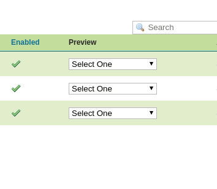
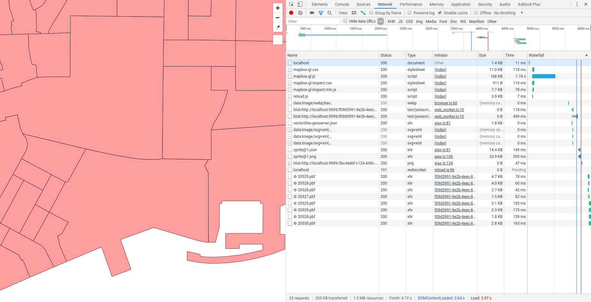

Servir vector tiles desde GeoServer
GeoServer está preparado para servir teselas vectoriales en tres formatos diferentes: GeoJSON TopoJSON y las vector tiles de Mapbox.
| Formato | MIME | Descripción |
|---|---|---|
| Mapbox Vector (MVT) | application/vnd.mapbox-vector-tile |
Formato Recomendado |
| GeoJSON | application/json;type=geojson |
No soportado por muchos de los clientes de Vector Tiles |
| TopoJSON | application/json;type=topojson |
Más complejo que el GeoJSON por gestionar la topología. No está soportado por muchos clientes |
GeoServer soporta Vector Tiles a través de GeoWebCache, por lo que será este el que se encargue de gestionar las capas que serán consumidas en este formato.
Lo primero para poder usar Vector Tiles con GeoServer será instalar la librería que le da soporte.
Instalar la extensión de Vector Tiles en GeoServer
Para instalar la extensión de GeoServer que nos permita usar vector tiles lo primero que haremos será descargar la librería de la versión de geoserver que estemos utilizando (para este ejemplo es la versión 2.14.4):
1 | wget http://sourceforge.net/projects/geoserver/files/GeoServer/2.14.4/extensions/geoserver-2.14.4-vectortiles-plugin.zip |
Extraeremos el contenido del archivo en la carpeta WEB-INF-lib de nuestra instalación de GeoServer
1 | unzip geoserver-2.14.4-vectortiles-plugin.zip -d $GEOSERVER_DIR/WEB-INF/lib/
|
Reiniciaremos nuestro GeoServer y ya tendríamos la extensión instalada.
Para comprobar que la extensión se ha instalado correctamente iremos al administrador web de GeoServer y seleccionaremos una capa de tipo vectorial, navegaremos hasta la pestaña de Tile Caching y comprobaremos que aparecen las opciones:
application/json;type=geojsonapplication/json;type=topojsonapplication/vnd.mapbox-vector-tile

Publicar Vector Tiles en GeoServer
Para publicar una capa vectorial como vector tiles simplemente seleccionaremos una capa de tipo vectorial que queramos publicar y seleccionaremos en la opción de Tile Caching cualquiera de los formatos de vector tiles que están disponibles. Se recomienda el uso de application/vnd.mapbox-vector-tile
En nuestro ejemplo de la base de datos bcn_geodata publicaremos la capa de secciones censales

Una vez que tengamos la capa publicada podremos comprobar que esta se ha cacheado simplemente accediendo a la instancia de GeoWebCache instalada junto a nuestro GeoServer. En la web de administración de GeoServer seleccionaremos la sección de Tile Caching, Tile Layers y deberíamos encontrar un listado de las capas que tenemos publicadas y cacheadas.

Desde la sección de Preview de cada capa tendremos la opción de visualizar los datos en formato pbf que es el formato de transferencia de las Vector Tiles

Si seleccionamos uno de estos formatos accederemos al visor de GeoWebCache donde visualizaremos la capa.
Publicar las capas como grupos de capas
Como ya se ha comentado a lo largo del tutorial, el formato de vector tiles nos permite enviar información de diferentes capas en una misma tesela. Para realizar esto con GeoServer, tendremos que generar un grupo de capas con los datos que nos interese y publicarlos de la misma manera que las capas anteriores.
Warning
Todas las capas que formen el grupo de capas deberán estar publicadas con el formato de vector tiles que queramos usar. En nuestro caso application/vnd.mapbox-vector-tile

Consumir las vector tiles publicadas desde GeoServer
Para consumir las vector tiles que tenemos publicadas en nuestro GeoServer, en este caso, definiremos un estilo con las capas publicadas como source-layer mientras que el source de los datos será la URL de nuestro GeoWebCache donde está publicada el grupo de capas. El estilo lo guardaremos como vectortiles-geoserver.json dentro de la carpeta resultado/vectortiles
1 2 3 4 5 6 7 8 9 10 11 12 13 14 15 16 17 | { "version": 8, "name": "VectorTiles GeoServer", "id": "vectortiles-geoserver", "metadata": { "mapbox:autocomposite": false, "mapbox:type": "template", "maputnik:renderer": "mbgljs", "openmaptiles:version": "3.x" }, "sources": { }, "sprite": "https://geoserveis.icgc.cat/contextmaps/sprites/sprite@1", "glyphs": "https://geoserveis.icgc.cat/contextmaps/glyphs/{fontstack}/{range}.pbf", "layers": [ ] } |
Lo primero que deberemos definir es el source de los datos. Para ello definiremos un source de tipo vector. Deberemos definir el esquema de las teselas como tms y la url de las teselas la url del GeoWebCache:
1 2 3 4 5 6 7 8 9 10 11 12 13 14 15 16 17 18 19 20 21 22 | { "version": 8, "name": "VectorTiles GeoServer", "id": "vectortiles-geoserver", "metadata": { "mapbox:autocomposite": false, "mapbox:type": "template", "maputnik:renderer": "mbgljs", "openmaptiles:version": "3.x" }, "sources": { "bcn_geodata": { "tiles": ["http://localhost:8090/geowebcache/service/tms/1.0.0/vectortiles:bcn_geodata@EPSG:900913@pbf/{z}/{x}/{y}.pbf"], "scheme": "tms", "type": "vector" } }, "sprite": "https://geoserveis.icgc.cat/contextmaps/sprites/sprite@1", "glyphs": "https://geoserveis.icgc.cat/contextmaps/glyphs/{fontstack}/{range}.pbf", "layers": [ ] } |
La URL donde se están publicando las teselas se compone de la siguiente manera:
- URL del GeoWebCache:
http://localhost:8090/geoserver/gwc/ - Definición del servicio TMS
service/tms/1.0.0/ - Definición de la capa en la manera layer@gridset@formato/{z}/{x}/{y}.pbf,
bcn_geodata@EPSG:900913@pbf/{z}/{x}/{y}.pbf
Las capas las definiremos como en los ejemplos anteriores:
1 2 3 4 5 6 7 8 9 10 11 12 13 14 15 16 17 18 19 20 21 22 23 24 25 26 27 28 29 30 31 32 33 34 35 36 37 38 39 40 41 42 43 44 45 46 47 48 49 50 51 52 53 54 55 56 57 58 | { "version": 8, "name": "VectorTiles GeoServer", "id": "vectortiles-geoserver", "metadata": { "mapbox:autocomposite": false, "mapbox:type": "template", "maputnik:renderer": "mbgljs", "openmaptiles:version": "3.x" }, "sources": { "bcn_geodata": { "tiles": ["http://localhost:8090/geowebcache/service/tms/1.0.0/vectortiles:bcn_geodata@EPSG:900913@pbf/{z}/{x}/{y}.pbf"], "scheme": "tms", "type": "vector" } }, "sprite": "https://geoserveis.icgc.cat/contextmaps/sprites/sprite@1", "glyphs": "https://geoserveis.icgc.cat/contextmaps/glyphs/{fontstack}/{range}.pbf", "layers": [ { "id": "barrios", "type": "fill", "source": "bcn_geodata", "source-layer": "barrios", "layout": { "visibility": "visible" }, "paint": { "fill-color": "#ff0000", "fill-opacity": { "base": 1, "stops": [ [ 9, 0.9 ], [ 22, 0.3 ] ] } } }, { "id": "seccion_censal", "source": "bcn_geodata", "source-layer": "seccion_censal", "type": "fill", "paint": { "fill-opacity": 0.6, "fill-color": "#fcc", "fill-outline-color": "#000" } } ] } |
Ahora construiremos un pequeño visor para consumir nuestros datos como ya hicimos en ejemplos anteriores. Para ello creamos un fichero index.html dentro de la carpeta resultado/vectortiles con el siguiente contenido:
1 2 3 4 5 6 7 8 9 10 11 12 13 14 15 16 17 18 19 20 21 22 23 24 25 26 27 28 29 30 31 32 33 34 35 36 | <!DOCTYPE html> <html> <head> <meta charset="UTF-8"> <meta name="viewport" content="width=device-width, initial-scale=1"> <title>Mapa VT</title> <link rel='stylesheet' href='https://api.tiles.mapbox.com/mapbox-gl-js/v0.44.1/mapbox-gl.css' /> <script src='https://api.tiles.mapbox.com/mapbox-gl-js/v0.44.1/mapbox-gl.js'></script> <link href='https://mapbox-gl-inspect.lukasmartinelli.ch/dist/mapbox-gl-inspect.css' rel='stylesheet' /> <script src='https://mapbox-gl-inspect.lukasmartinelli.ch/dist/mapbox-gl-inspect.min.js'></script> <style> html, body { margin: 0; height: 100%; } </style> </head> <body id='map'> <script> var map = new mapboxgl.Map({ container: 'map', // id del elemento HTML que contendrá el mapa style: './vectortiles-geoserver.json', // Ubicación del estilo center: [2.19224, 41.38585], zoom: 15, bearing: -45, hash: true }); // Agrega controles de navegación (zoom, rotación) al mapa: map.addControl(new mapboxgl.NavigationControl()); // Agregar el control de inspección map.addControl(new MapboxInspect()); </script> </body> </html> |
Usaremos cualquier servidor web para publicar el contenido de la carpeta y accederemos desde nuestro navegador a la url publicada por este servidor donde visualizaremos
